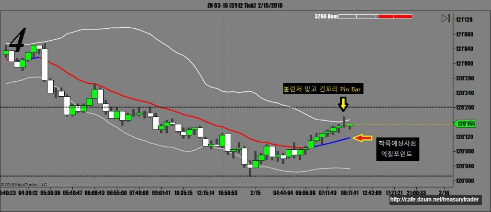
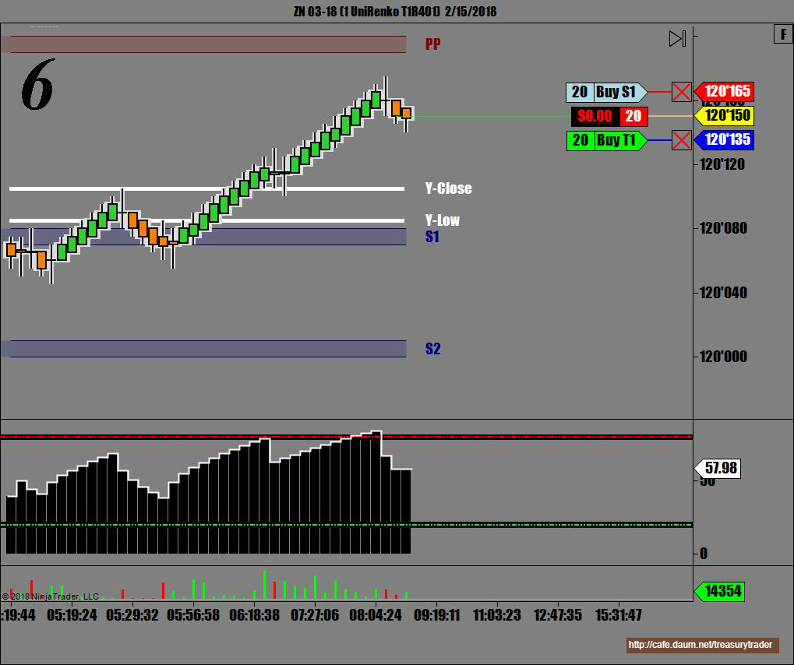
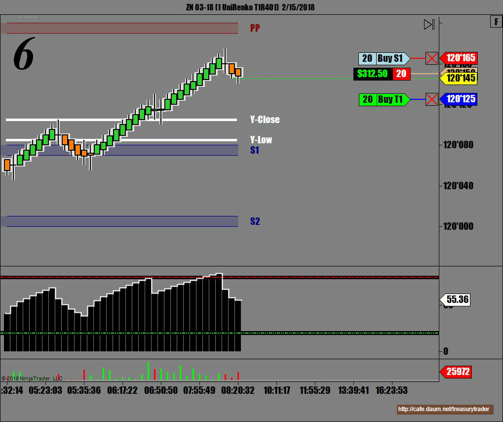
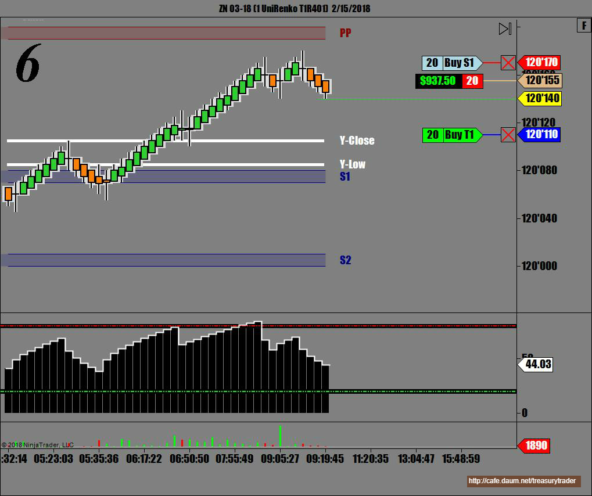
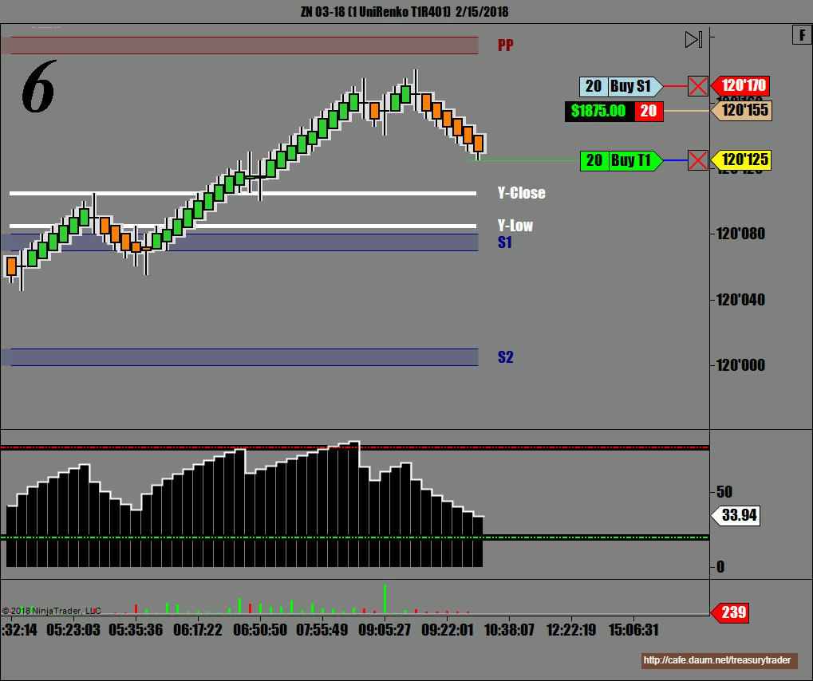
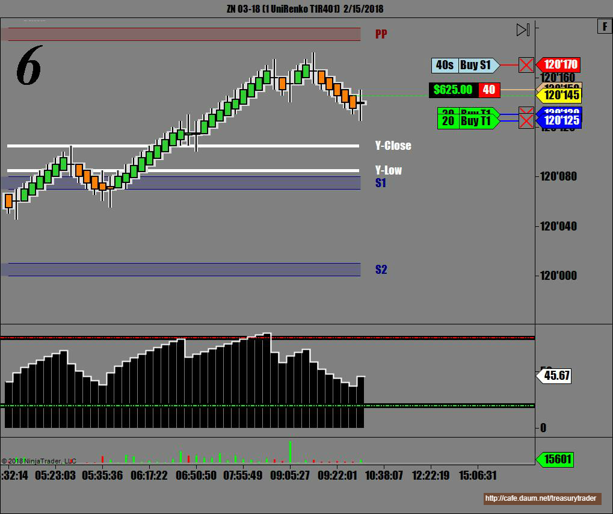
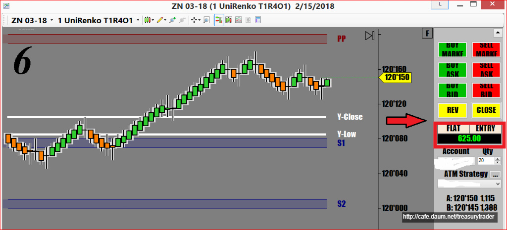

새로 산 베개 덕분에 목이 아파서 밤새 뒤척이느라 한잠도 못자고..
늦게 일어나서 졸린눈으로 매매하다 첫번 매매 손실마감 1200불 손실..헉

챠트를 보면 아주 작은 봉들이 수없이 만들어지고 있음
그말은 기관들이 크게 지르지 않고 있다는 얘기.
당연 움직임이 작고 마디 하나가 힘차게 쭉쭉 뻗는 장이 아니라는 얘기
이런날은 적게 먹고 나와야 되기 때문에 4틱만 먹고 나오려는데...

여기까진 괜찮아서 잘가나 싶더니만..헉

여기서 다시 올라와서 손절에 걸림 손실 $1200
심기일전해서 재도전
확실한 다이버전스와 거래량을 보고 다시 매도


내 주문까지 왔다가 안걸리고 다시 올라감..
 2_15_2018.jpg)
기다렸다가 이평선에서 못뚫고 헤매고 있길래 한번 더 확인사살 함
성공은 했지만 매매 RULE 을 어긴 Bad Trading이었음
다행히 예상대로 성공했지만 만약 튀어올라 게속 갔으면 손실이 두배로..
잠을 못자서 판단력이 흐려졌고 첫매매부터 말아먹어서 ..참 아슬아슬한 매매였음

간신히 아침 손실 복구하고 조금 남음...
첫매매를 실패하면 항상 기분이 찝찝해서 평정을 잃기 쉬움
그럴수록 심호흡을 하면서 마음을 다스리는게 중요함

매매복기
1차 매매 실패이유
* 잠을 잘 못잤다든지 몸이 아프다든지 피곤하다든지 화가 났다든지 몸 컨디션이 정상이 아닐떄는 매매금지 판단력에 심각한 영향이 오기 때문에 곧바로 손실로 이어짐.
* 국채매매에서는 피봇지지(저항)이 아닌곳에서 만들어지는 추세전환 캔들 신호는 신뢰도가 매우 낮음
거지같은 볼린저밴드에 긴꼬리 도지 떴다고 들어간 실수(기관들은 캔들 모양이나 볼린저밴드같은건 신경도 안씀)
* 추세와 반대의 역매매. VWAP과의 아무리 큰 이격이 생겨도 추세를 이길 수는 없음. 추세가 강할때는 이격이 100리도 더 벌어짐
* 모멘텀이 아직 Positive Territory 안에 있는데 매도로 진입했음..잠이 덜 꺴음..
* 과도한 자신감 이차 매도 - 거의 점쟁이 수준. 트레이더는 절대로 에측을 하면 안됨.
이런 사항들이 오늘의 매매일지에 기록될 사항임
왜 성공했는지 실패했는지 어느 기법을 썼는지
오늘의 실수는 무엇이며 아쉬운점은 어떤것인지
앞으로 연습해서 고쳐야 할 나의 단점이 무엇인지...등등
"지혜로운 사람은 자신의 실수를 통해 배우고
총명한 사람은 남의 실수를 통해 배운다..." - Dark Templar -
수고하시고 고생했읍니다 저는 어제 국채는 기술적으로 매수세가 들어올것같아서 안하고 오일 매수했는데 밤새 밀리다가 본절에 걸어 놓고 잤더니 체결되고 30틱이 더 올라왔네요! 어제는 하기싢어서 틱 띠기만 할라했는데 오일 매수에 물려서! 오늘 심기일전 해야지요
답글 | 신고
┗ DarkTemplar 18.02.16. 12:12
그러셨군요. 저도 가끔씩 크루드오일 매매하는데 느린 국채만 하다가 빠른 선물 매매하면 워낙 집중을 해서 그런가 시간이 금방 가더군요. 조만간 우리 카페도 한국분들 많이하는 크루드오일이나 국선 항셍같은방도 하나씩 만들면 좋을것 같습니다. 오늘 금요일인데 힘차게 만회하시고 좋은 주말 보내십시요